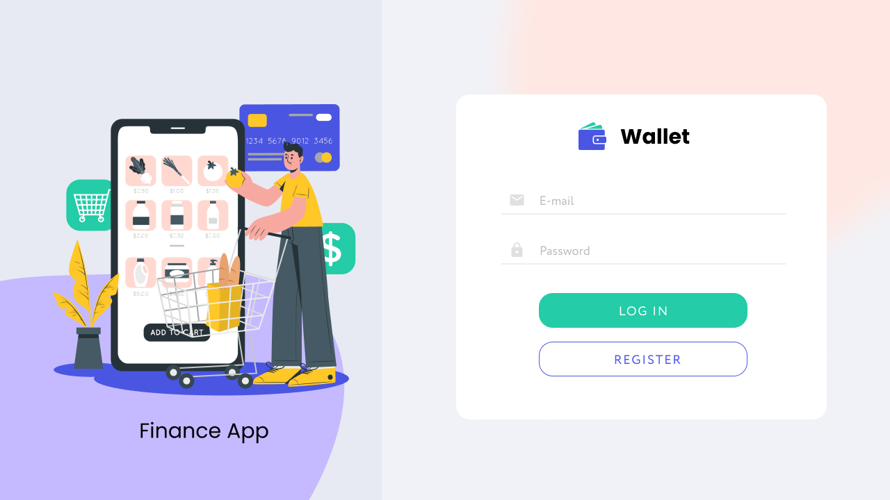

Головне
Шукаю роботу Front-End developer на повний робочий час (розгляну неповну зайнятость). Маю впевнені знання в HTML, CSS, JavaScript, and React. Зараз вивичаю NODE.js, Vie, TS. Маю знання Agile/Scrum, які здобув при роботі на командних проектах. Потребую роботу, на який можно розвивати технічні навички.
Проекти
-

Wallet - застосунок для ведення обліку власного бюджету
[React, Redux, JS, Style Components]
Вебсайт з адаптивною версткою, модальнимі вікнами, працює з Local Storage та бекендом.
Командний проект.
-

Coctails - застосунок з рецептурами коктейлів>
[HTML, CSS, JS]
Вебсайт з адаптивною версткою, модальнимі вікнами, бургер меню, працює з Local Storage та бекендом.
Командний проект.
-
Donut - вебсайт кафе та школи з виготовлення пончиків
[HTML, CSS, JS]
Вебсайт з адаптивною версткою, модальнимі вікнами, бургер меню, кастомна пагінація відгугів.
Індивідуальний проект.
-
IceCream - вебсайт мережі кафе>
[HTML, CSS, JS]
Вебсайт з адаптивною версткою, модальнимі вікнами, бургер меню.
Командний проект.
-

WebStudio - вебсайт компанії, що надає послуги web-дизайну
[HTML, CSS, JS]
Багатосторінковий вебсайт з адаптивною версткою, модальнимі вікнами, бургер меню.
Індивідуальний проект.
Досвід роботи
Донедавна професійно займався корпоративними фінансами на посадах фінансовий директор, головнйи бухгалтер. Маю значнйи доcвід в реалізації задач з автоматизації обліку, бізнес-процесів в ролі менеджера проекту на боці замовника. Maю досвід з керуванн командою до 50 членів, розумію вартість слів "результат" та "дедлайн"
Компанії з якими працював:
- ТОВ «Телекарт-Прилад» (м. Одеса) (завод з виробництва електронної продукції). Обіймав посаду фінансового директора і головного бухгалтера (за сумісництвом).
- ТОВ «Мед-Сервіс» (м. Дніпро) (національна мережа фармацевтичного рітейла). Обіймав посаду фінансового директора. В цієї компанії втілив цілу низку проектів обліку та корпоративного управління.
- ТОВ «ФРА-М» (м. Донецьк) (національний дистрібутор фармакологічної продукції)ю Обіймав посаду фінансового директора. Велику частину роботі займало управління власним та запозиченим капіталом
- ТОВ «Ювелірний завод «Багет» (м. Донецьк) (великий Український виробник ювелірних виробів). Обіймав посаду фінансового директора. Тут втілив низку проектів з обліку виробництва.
Освіта
- (2023) IT школа GoIT.
- (2015) Курсы 1С:Програміст.
- (1995-2000) Донецький політех. Eкономіка підприємства.